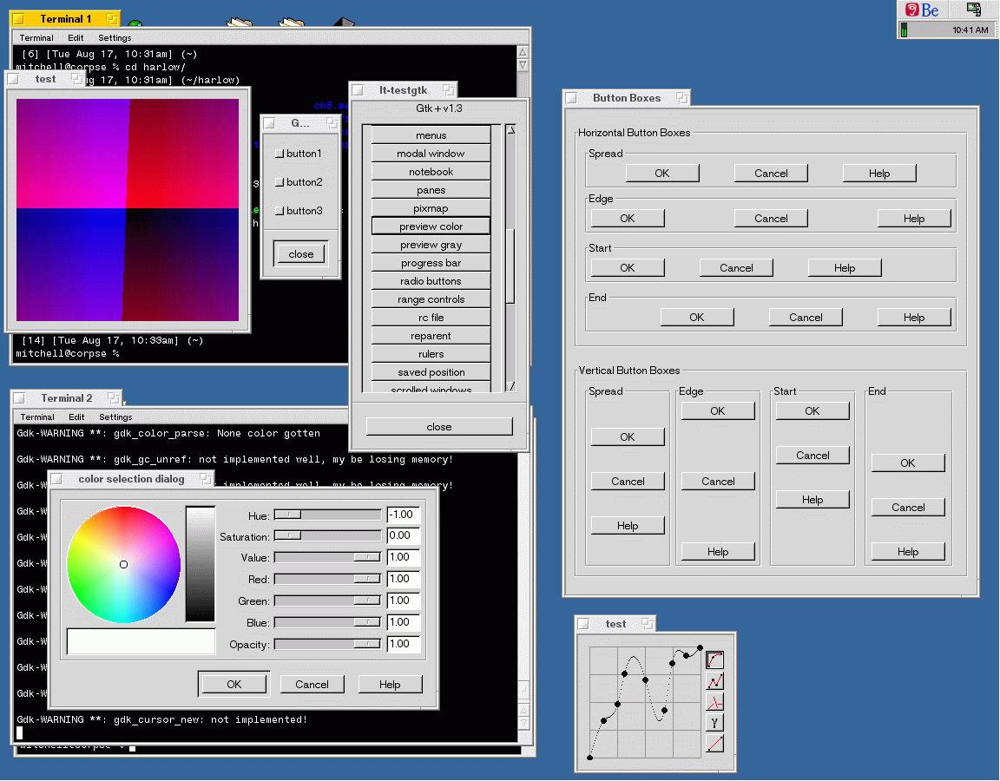

The GTK+ port to BeOS is in alpha stage right now. That means it crashes a lot, but starting to look nice and work quite well.
The initial port of GTK+ for BeOS is was done by Shawn T. Amundson and James Mitchell. This port came about because we needed the GDK drawing routines to work for our native interface port of GIMP. What better way to test GDK drawing routines than by porting the rest of GTK+? The port proved very useful in our work on GIMP because we can now run GIMP without an X Server, much like the win32 port.
Shawn and James are no longer working on a native interface port of GIMP to BeOS, and have little time for stabalizing the port of GTK+, so therefore have put up the lastest GTK+ sources so others can use them as a basis for a more stable port. One such attempt is being done at BeUnited. We wish such a project much luck.
Stuff is working, although still at an alpha stage. Crashes are common. Menus work now, drawing is mostly correct, images work, pixmaps work, etc. Lots of stuff todo, see below.
Todo
The list of remaining bugs is huge. We have found so far though that implementing one more function can squash a large number of them all at once. Here are some known issues and/or todo items:
This list is out of date, the newer version implements some things that are listed here. Also, things like Pango must now be ported.Download
The alpha version has been released (source only) and is available for interested developers to look at. We suspect it will not be easy to build on other systems without all our GNU tools installed, and we are working on that.
Building
We still need to integrate our work into the main GTK+ distribution, in order to make it easier for others to build. Since we haven't done that yet, the snapshots are just our CVS tree with the CVS directories removed. So you have to have some GNU tools installed like automake and autoconf.
You can build it on BeOS (once you have another other stuff installed) by using the 'BUILD.BeOS' shell script included. Note this is a one-liner and you don't have to use it. It is what we use. Make sure it gets installed in the same place as GLib, for sanity's sake.
You should use the latest CVS version of GLib, which you have to install before installing GTK+. Look at the GNOME CVS Instructions for details in obtaining glib from CVS.
Some versions of software we are running on BeOS:
Contributing
If you want to contribute, get on the gtk-devel-list mailing list. That is the appropriate place for patches and other development discussion.